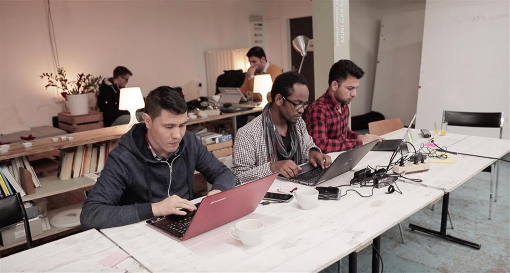
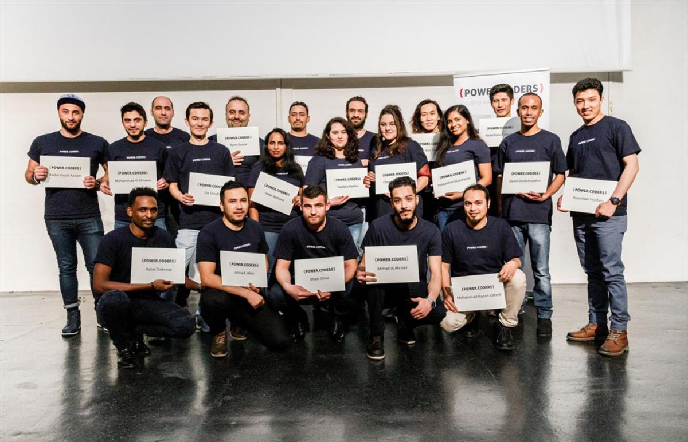

SCIENCE & TECH|#powercoders|INTERVIEW
Published on 09 December 2020, 05:55
Priya Burci: 'Powercoders is really about empowering refugees'
Priya Burci calls herself a UN baby. Half Indian and half Italian, she grew up in Geneva with both parents working for the United Nations. Her grandfather was also part of the UN when it was being built and its mission defined. From an early age on, she understood the importance of both international and public institutions and the approach of public service dedicated to helping others. Her background shaped her own life choices.
Burci chose coding as a means to an end. As chief executive of Powercoders International since 2018, she contributes to expanding the organisation’s mission to new horizons. The non-profit association is focused on training refugees in IT solutions, equipping them with the skills they need to enter the job market, and giving them a new start in life. Burci shares her remarkable story with Geneva Solutions.
Did you know early on that you would follow your family’s path and engage for a better world?
I wasn't 100 per cent clear on exactly what my path would be. But I was always very certain that I wanted to do something that helped others. I think that definitely gives meaning and helps you work towards a goal. I learned from my parents, but also from my grandparents that a job that helps people is definitely rewarding.
I think that my first real tangible experience in volunteering with refugees took place during a year between my bachelor's and my master's degrees. With a friend, we started offering coding courses to refugees. We realised that it was a really interesting career path, and very accessible to people who perhaps hadn't had the opportunity to do further their education, but they were interested in technology. That definitely introduced me to the concept of using and leveraging technology as a way of making social impact.
How did it make you feel?
It definitely felt like we can make a tangible impact in someone's life. And it didn't take that much time to do it. It was really about leveraging the community and people that wanted to help and offering an opportunity. And it was in the middle of the refugee crisis. All of our students were incredibly talented and so motivated. They really thrived as soon as they were given an opportunity. You could really see the tangible effects and how easy it is to leverage community to make a difference. This is very close to my heart, as I come from an immigrant background. My grandfather was able to achieve the things he achieved, because he worked very hard and was empowered by others.
Why coding?
I've always been interested in technology. It really took another turn during an internship I did in an NGO that uses data and data analytics to improve humanitarian response. It ignited my interest in seeing the practical applications of technology. By discussing with colleagues and friends, I witnessed the huge shortage of talents. Coding is a skill that you can learn online, you don't have to do a three year classic education to master the art. It seemed like a really logical thing to teach refugees who are talented, as a way of allowing them to access career paths and address the market needs.
The project Vincent Baumgartner and I started in Geneva was called Project integration. We ran it for about a year, and it grew quite quickly. It was really uplifting to see how the community engaged. A lot of people in tech wanted to help with the refugee crisis, but simply didn't have the avenues. When I went to do my master's degree, I did my thesis on IT education for refugees as a way of integrating them into jobs. One of my case studies was Powercoders. I started talking with the founder, Christian Hirsig. That’s how it all started. I joined in 2018 to expand internationally and bring our program to other refugees in the world. We are running a program in Italy, but are also planning to expand to Madrid, Spain, Tunisia and hopefully Trinidad and Tobago as well, to support Venezuelan refugees.
What is Powercoders?
Powercoders offers intensive coding courses, a coding boot camp. Our ultimate goal is not just formation, but job integration. The first seven weeks are spent building a basis for web development. In the eighth week, we invite companies to come in and meet our students, interview them, and if they find a good match, offer them an internship. The remainder of the program is spent specialising their skill set for the specific company position they secured, so to really prepare them to thrive. The program also focuses on building soft skills and professional skills, like communication, teamwork, time management, but also writing a CV, building a LinkedIn profile, interviewing. We try to make this culturally contextualised, because the skills valued in Switzerland may be very different from those in Syria, or those in Italy.

Powercoders students in Zurich (2017). Source: Powercoders.We really try to make sure that they're ready to integrate into a local workplace in that specific country. A job coach supports the students during the internship. The coach is someone who has worked in the country, understands workplace expectations, and flags when there may be issues that need to be resolved. This definitely alleviates the pressure on companies to be fully responsible for integrating their intern. But it also offers an important support to the intern because I think everyone knows your first job is always so daunting ! Having the right support network is key.
What feedback do you get from students?
We regularly receive between 150 and 200 applications a year. Some of our refugee students have IT backgrounds, some of them are just really interested in IT. The main feedback that we get is that they were looking for a way into the IT sector but couldn't find a way to get there. Powercoders help them to build a career that they're passionate about and redefine their lives with dignity. It's definitely something that they're enthusiastic about. And I think they recognize the fact that, at the end of the day, Powercoders isn't really a training program. It's really about empowering people and putting them in a position where they can access new opportunities.
Do you have any examples that you want to share?
I can think of two stories that are really inspiring. The first is actually my colleague Hussam. He was one of our students in Bern and did fantastically. After his internship, he came back to us and said that he wanted to dedicate his time to helping others. And so, he joined our team. Now he's the industry leader in Zurich and is managing company relations. But he's also in charge of our expansion in the MENA region.
Another, really inspiring example is the story of Jamila, a mother with a small child. She had been an IT teacher in Afghanistan and followed our program in Zurich, after having spent four years in Switzerland trying to apply to jobs. And now she's working at Swisscom as a DevOps engineer. And, it just really shows how much talent there is, they just need access to the right opportunities to thrive. It really sums up the spirit of Powercoders, which is helping others and creating this amazing community.

Powercoders graduation in Basel (2019). Source: Powercoders.What still needs to be done to make things change?
The first thing is definitely to engage with the refugee community and understand where their needs are. There are so many refugees who are motivated, and have a lot to share. But I think if the end goal is job integration, engaging with industry is also really important to understand one of the barriers that refugees face when entering into specific jobs. And sometimes it's actually not what you expect. It's the fact that maybe their degree is from another country and seen as a bit less legitimate. We really pride ourselves of setting a precedent. Refugee participants are now thriving in these companies. And these companies are greatly benefiting from their talent. Many companies are risk averse. If you engage them in the conversation and show them existing success cases, you can create a response that meets both needs.
How has the COVID-crisis impacted the program?
It was definitely a learning experience. We had to adapt, and our programs went remote. And actually, they worked quite well. Our teams were super dedicated to make sure that students still got the same attention and feedback. I think it also opened up a few opportunities. We're in the process of trying the idea of remote work opportunities, which definitely opens up bigger avenues. We have launched a pilot project in Turkey, in partnership with a coding school and the support of the Swiss embassy. The goal is to place Syrian refugees in Turkey in remote job opportunities in Swiss companies. With Covid, remote working has become a lot more acceptable and used. If this pilot works, that's something that we can scale to other countries and offer opportunities not just to refugees where they are, but regardless of where they are. And that is really powerful.
#refugees #education #coding #powercoders
SOURCE: GENEVA SOLUTIONS